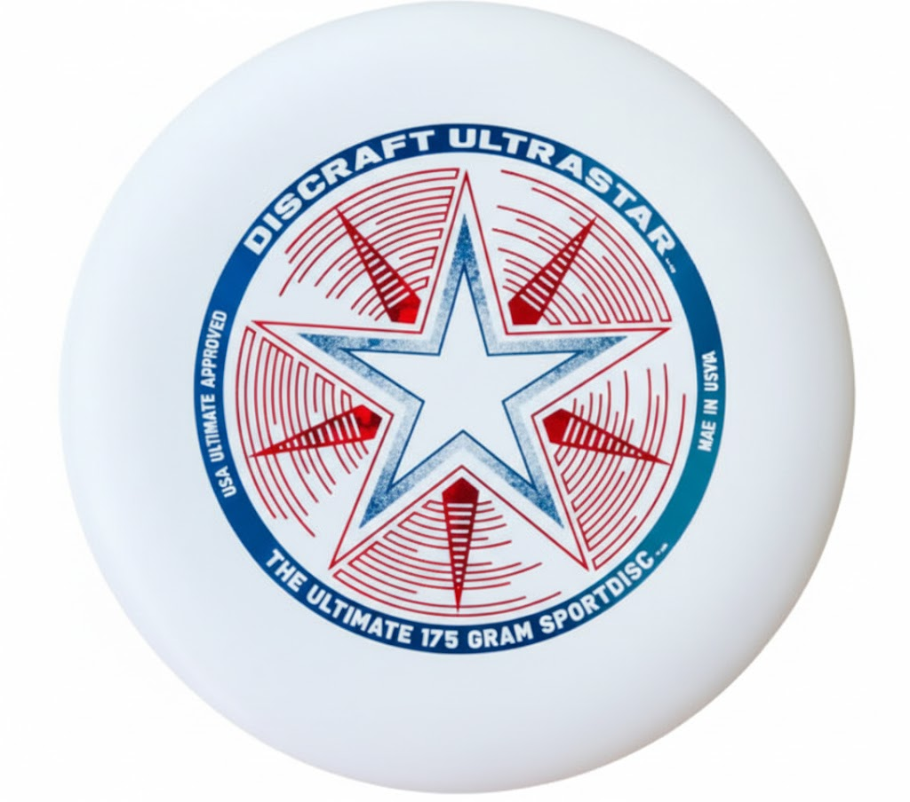
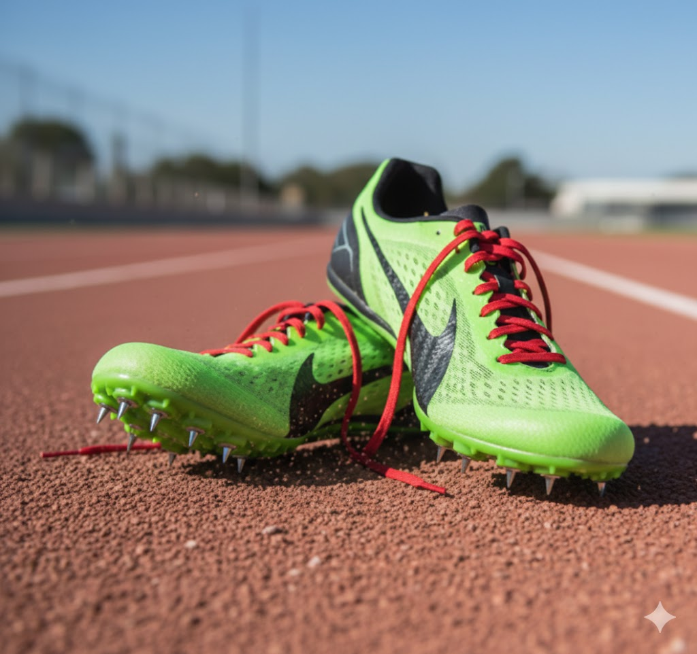
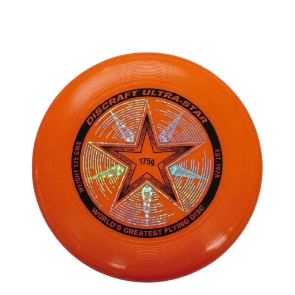

挑戦しよう
アルティメットとは、フリスビー（ディスク）を使った7人制のチームスポーツです。サッカーのような走る展開の中で、バスケのようなパス回しをしながら、アメフトのように得点ゾーンを目指すスポーツです

アルティメット用のディスクは、175gの競技規格で作られたフライングディスクです。空気力学に基づく形状によりまっすぐ安定して飛び、グリップしやすい表面で正確なスローとキャッチをサポートします。耐久性にも優れ、練習から試合まで幅広く使われています。

アルティメットでスパイクが必要なのは、芝生の上で行う競技特有の素早い走り出しや急な方向転換、ジャンプなどの動きを安定して行うためです。スパイクは地面をしっかり捉えるグリップ力を発揮し、滑りによる転倒や無理な踏ん張りで起こるケガを防ぎます。
アルティメットでコーンが必要なのは、コートの境界やエンドゾーンの位置を明確に示し、プレーエリアを正確に設定するためです。コーンがあることで、選手はラインを意識しながら動きやすくなり、判定の曖昧さも減ります。
サイドスロー（フォアハンド）は、アルティメットで多く使われる代表的なスローのひとつで、身体の横からコンパクトに振り出して投げる投法です。利き手側の腰の横あたりでディスクを保持し、手首のスナップを使って回転をかけることで、直線的で鋭いパスを実現できます。
バックスロー（バックハンドスロー）とは、ディスクを利き手側の外側から振り出し、手首の回転で安定したスピンを与えて放つ、アルティメットで最も基本的なスローである。安定性とコントロールに優れ、短距離から長距離まで幅広い場面で使用される。
ハンマーとは、ディスクを頭上から振り下ろすようにして投げるスローで、スロー直後にディスクが上下反転して飛ぶのが特徴である。高い弧を描きながら相手ディフェンスの上を越えるため、マークをかわしたり、遠くの味方に素早く展開したい場面で効果的に使われる。
スクーバーは、ディスクを頭の上から横向きに投げるアルティメットのスローです。 フォアハンドの握りから高い位置でリリースするため、相手ディフェンスの上を通して素早くパスを出せます。 短い距離で使いやすく、狭いスペースを通したいときに便利な投げ方です。
仲間と息を合わせてディスクをつなぐ瞬間に大きな爽快感がある。 ロングスローが走り込んだ味方にぴたりと合い、得点につながったときの喜びは格別だ。
基本ルールが簡単で、誰でもすぐに覚えられる。 最初は思い通りに飛ばなくても、 ちょっとずつ投げ方を覚えるうちに どんどん上達が実感できます。
アルティメットには 「ミックス部門」 があり、男女が同じフィールドでプレーします 。速い男性プレイヤーも、正確なパスを出す女性プレイヤーも、同じようにチームの要。フィールド上で自然に「尊重」と「協力」が生まれる。
